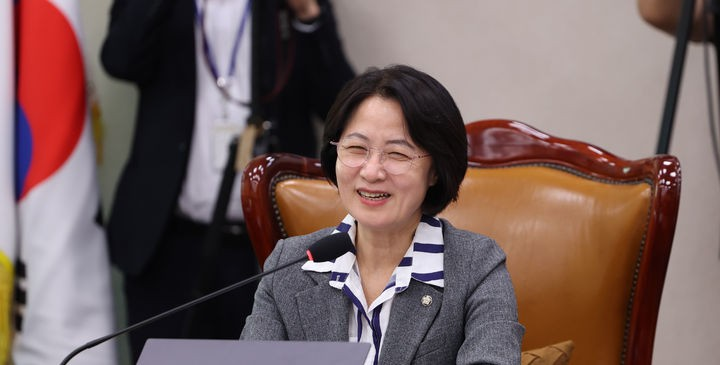

판사 · 6선 의원 · 민주당 대표 · 법무부장관 · 경기도지사 후보

판사 시절부터 소신을 지켜온 법조인. 대구 출신임에도 민주당에서 6선을 달성했다. 법무부장관으로 검찰개혁을 주도하고, 법사위원장으로 검찰청 폐지까지 완수했다. '추다르크'라는 별명처럼 정면 돌파의 정치 스타일이 특징이다.
경북 달성 출신. 세탁소를 운영하는 부모 밑에서 정의와 정직을 삶의 기준으로 삼았다. 단칸방 사글세를 전전하며 서민의 삶을 몸으로 배웠다.
제24회 사법시험 합격. 춘천·인천·전주지법·광주고법에서 판사로 재직하며 소신 있는 법관으로 이름을 알렸다.
전두환 정권의 압수수색 영장 청구에 전국 유일하게 기각 결정. "책에 불온성이 없다"는 법관 양심을 지켰다.
판사직을 사임하고 새정치국민회의에 입당. "세탁소집 둘째 딸, 부정부패한 정치판을 세탁해!"를 내걸고 지역구에 도전했다.
광진구 을 43.77% 득표. 헌정 최초 여성 판사 출신 국회의원. 국감장에서 경찰의 여대생 성희롱 사실을 끝까지 읽으며 공론화했다.
김대중 대선 캠프 유세단장으로 보수의 심장 대구에서 선거운동. 지역감정에 맞서 싸우는 모습에 '추다르크' 별명을 얻었다.
1998·1999년 최우수의원 1위. 제주 4·3 수형인 명부 발굴 및 특별법 제정을 이끌어 '제주 명예도민 1호'로 추대됐다.
삼성이 돈이 든 골프백을 사무실에 두고 갔으나 즉시 돌려보냄. 2007년 삼성 내부 문건에 "추미애의원처럼 돈을 받지 않는 상대는 비싼 포도주를 건네라"고 기재돼 세상에 알려졌다.
54.03% 득표. 민주당 최초 대구·경북 출신 여성 당대표. 2017년 문재인 대선 승리, 2018년 지방선거 압승. 민주당 역사상 최초 임기 완주 당대표.
취임 40일 만에 역대 최초로 검찰 수사권·기소권 분리 주장. 윤석열 검찰총장과 대립하며 초유의 검찰총장 징계를 단행했다.
경기 하남시 갑으로 지역구를 옮겨 당선. 비례대표 없이 지역구만으로 6선을 달성한 헌정 최초의 여성 의원이 됐다.
7개월간 682건 처리. 사법개혁 3법, 검찰청 폐지·공소청·중수청, 내란전담재판부 설치법까지 검찰개혁 과제를 완수했다.
경선 과반 득표로 결선 없이 확정. 민선 31년 역사상 최초 여성 광역단체장 탄생을 향해 나아가고 있다.
1986년 전두환 정권이 『난장이가 쏘아올린 작은 공』 등 100여 권을 불온서적으로 지정하고 전국 법원에 압수수색 영장을 청구했다. 전국 판사 모두가 영장을 발부한 상황에서 초임 추미애만이 홀로 기각했다. 당시 법원장은 "남들처럼 하는 게 상식이 아닌가"라고 질책했지만 추미애는 굽히지 않았다.
구속영장이 기각됐다며 경찰서장이 한밤중에 직접 전화해 재발부를 압박했다. 추미애는 "영장청구권자는 검사인데 서장이 왜 직접 전화하느냐"고 응수했다. 법원장의 질책에도 굽히지 않고 검찰에 문제 제기했고, 결국 경찰서장이 찾아와 직접 사과했다.
대구 남산초등학교 6학년 때 촌지를 받는 담임 선생님이 친구를 때리는 것을 보고 교실을 박차고 나갔다. "선생님 스스로가 옳다고 생각할까봐"라는 이유였다. 경북여고 입학 때 좌우명을 묻자 "후회하지 않는 삶을 살겠다"고 답했다.
김대중 총재를 처음 만난 자리에서 "전국구 말고 지역구 국회의원에 도전하겠다"고 선언했다. 편한 길 대신 지역구에 도전해 여성에게 도전할 수 있다는 희망을 보이고 싶어서였다. 동료들 모두 "대단하다"고 칭찬했다.
법무부장관 취임 40일 만에 역대 최초로 검찰의 수사권·기소권 분리를 주장했다.
판사 사찰, 검언유착 수사 방해 등의 사유로 초유의 검찰총장 징계를 단행했다.
법왜곡죄·재판소원·대법관 증원 법안을 모두 통과시켰다.
법사위원장으로서 7개월 682건 처리. 검찰개혁 핵심 과제를 완수했다.
12·3 내란의 실체를 밝히기 위한 제도적 장치를 마련했다.
내란 진상규명을 위한 특검법을 제정했다.
2011년 중소기업 재직 청년 저축 시 정부가 동일 금액 적립, 최대 5천만원 목돈 마련 아이디어 최초 고안. 현재 청년내일키움통장의 원형.
2001년 광진구 자양2동에 어린이집·주민센터·문화공간 복합청사를 선도 구축. 현재 전국 모델의 원형.
2000년 11월 주민자치센터 설치 법안을 전국 최초로 발의했다.
임기 내 공공주택 14만8천호 공급, 청년·신혼부부 주거 지원을 경기도지사 핵심 공약으로 제시.
4·3 특위 부위원장으로서 수형인 명부를 직접 발굴. 국가폭력 피해자 명예 회복의 첫 발.
대정부 질문과 입법 활동으로 특별법 제정을 이끌었다. '제주 명예도민 1호' 추대.
법무부장관 재직 시 배상을 추진. 2021년 4·3 유족회·평화재단 감사패 수령.
경찰의 여대생 성희롱 사실을 국감장에서 끝까지 읽어 공론화. 여당 집단퇴장에도 굽히지 않았다.
새천년민주당 지방자치위원장(2000~2001)으로 지방의원 유급화를 추진했다.
첫 삽을 못 뜬 GTX-C 노선 등 멈춰있는 사업의 조속한 정상화를 핵심 공약으로 제시.
1996~2002년 경기도 수해 대응 실패, 핑퐁식 책임 회피, 전시성 예산 등을 질타했다.
문화 인프라 확충을 위한 한예종 경기권 유치를 공약으로 내세웠다.
"후회하지 않는 삶을 살겠다"
"세탁소집 둘째 딸, 부정부패한 정치판을 세탁해!"
"돈 가지고 하는 정치는 누구나 할 수 있지. 그런데 당신은 돈 없이도 정치를 할 수 있다는 걸 보여줘!"
"모든 개혁에는 응당 저항이 있을 수 있습니다. 그러나 영원한 개혁은 있어도 영원한 저항은 있을 수 없습니다."
"내 정치 인생 중 가장 큰 실수이자 과오가 탄핵에 찬성한 것"
"부자건 가난하건 출발선이 같은 사회를 만들고 싶다"
"2021년 검찰 개혁을 완수하지 못한 채 법무부장관 자리를 떠나야 했던 무거운 발걸음이 아니라 이처럼 뜻깊은 결과를 여러분께 보고드릴 수 있게 돼 영광"